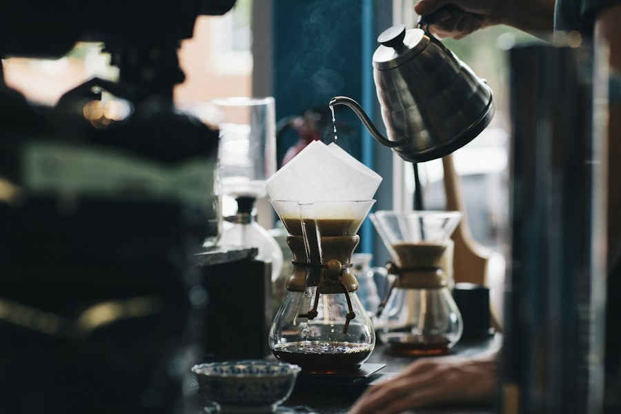
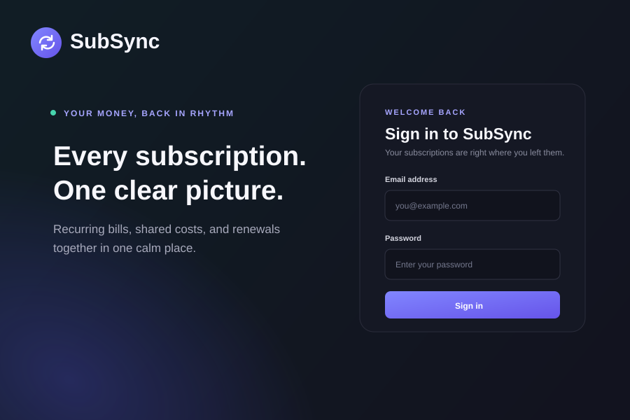
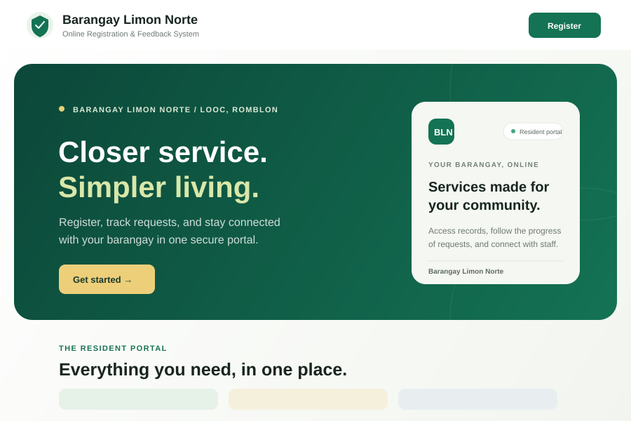
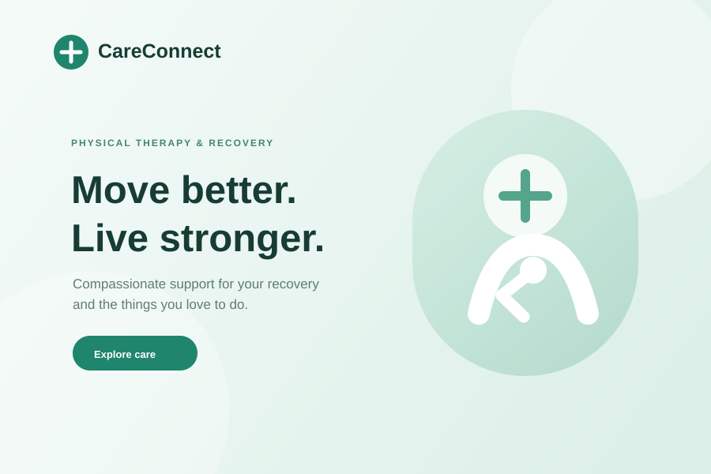
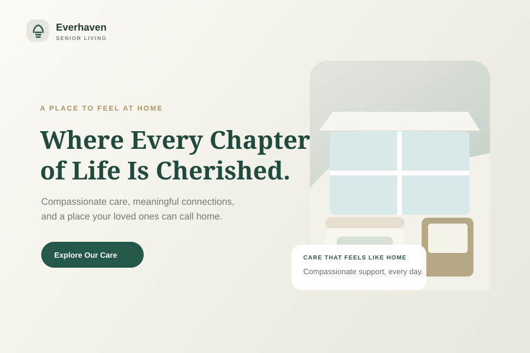
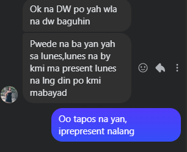
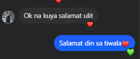

Business website
Live site ↗
LuxeNest Home Cleaning
A polished home-cleaning website focused on booking and service clarity for residential and condo cleaning.
Hi, I’m Jaykie Gado — an independent web developer focused on business websites and practical digital experiences for businesses, students, and personal projects.
About
I’m Jaykie, a web developer who enjoys turning ideas into websites and web apps. Working on my capstone taught me how much patience, clarity, and iteration go into building something useful — and that process is what motivates me today.
I focus on creating clean, practical experiences for small businesses, students, and individuals who need a website or web app that serves a real purpose. My goal is simple: combine strong presentation with honest, easy-to-use functionality.
Stack
Proficiency I can confidently deliver.
Server-side development and data storage.
How I build usable, polished experiences.
Practical tools used to shape and deliver work.
Selected work
A polished home-cleaning website focused on booking and service clarity for residential and condo cleaning.

A café-focused landing experience with a warm visual identity and a clear menu and location presentation.

A subscription and recurring cost tracker designed to help users organize bills, renewals, and shared expenses.

A resident registration and feedback portal with management features for requests, records, and communication.

A patient-focused clinic website centered on clear service offerings, recovery messaging, and a friendly, modern feel.

A warm, welcoming website presenting care options, community overview, and a clear path to inquiry and tour information.
Experience
Project experience · web development
Built an online registration and feedback system for a student client, with tools for residents to submit requests and staff to manage records and respond.
Visit the live portalTestimonials
“Okay na po, wala na raw babaguhin. Salamat ulit!”
“It’s all good; nothing else needs changing. Thanks again!”


Contact
Need a business website, landing page, or practical front-end experience? I’m available for focused projects that need clear design and solid implementation.